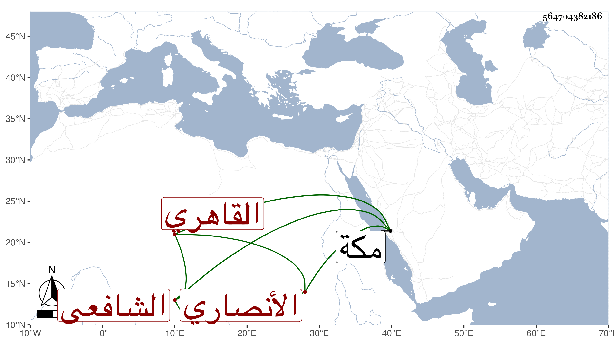

0902Sakhawi.DawLamic.ITO20230111-ara1.EIS1600.564704382186
Biography ID: 564704382186
45
محمد بن علي بن محمد بن سليمان الشمس الأنصاري التتأي ثم القاهري الشافعي أخو الشرف الأنصاري واخوته ووالد الكمال محمد . ممن اشتغل ولازم القياتي والونائي وغيرهما بل قرأ على ابن حسان حتى مات وكان من محافيظه المنهاج وتوضيح ابن هشام ، وفضل وحج غير مرة وابتنى هو وأخوه البهاء أحمد بمكة في طرف المسعى تجاه أول الميلين الأخضرين دارا حسنة يتشاءم بها . مات بعد تغير عقله في ليلة ثالث شعبان سنة ستين بمكة وقد جاز الأربعين رحمه الله ، وانقطع نسله إلا من ابنة كانت تحت الخطيب أبي بكر النويري واستولدها ابنة وفارقها فتزوجها ابن عمتها عبد الكريم الاسنائي فماتت تحته وتركت له ابنة أيضا .
